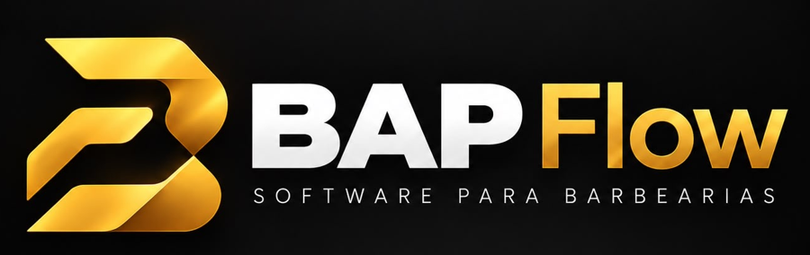
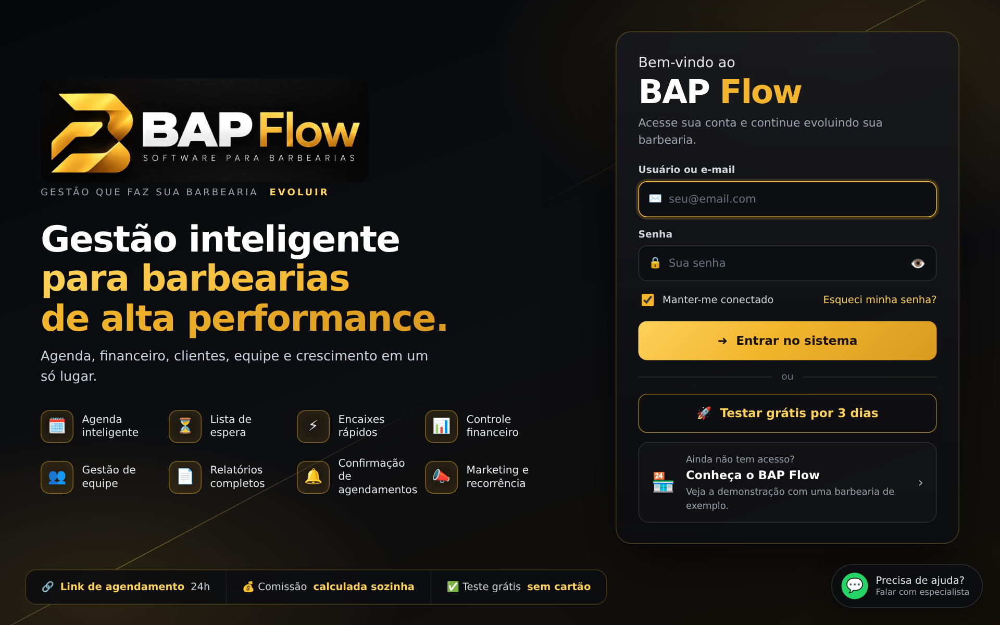
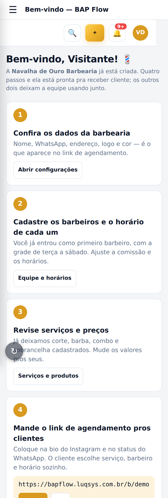
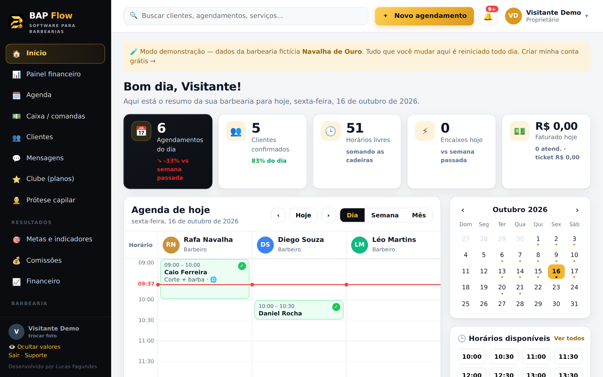
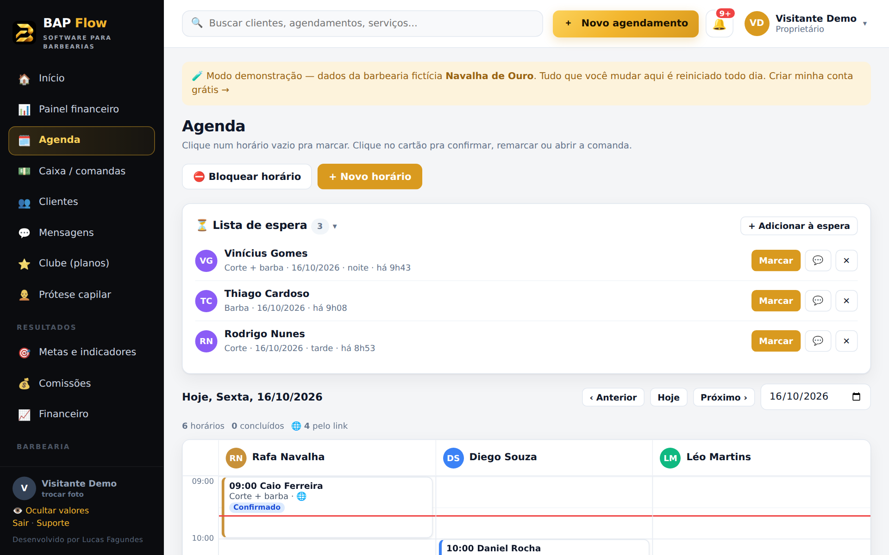
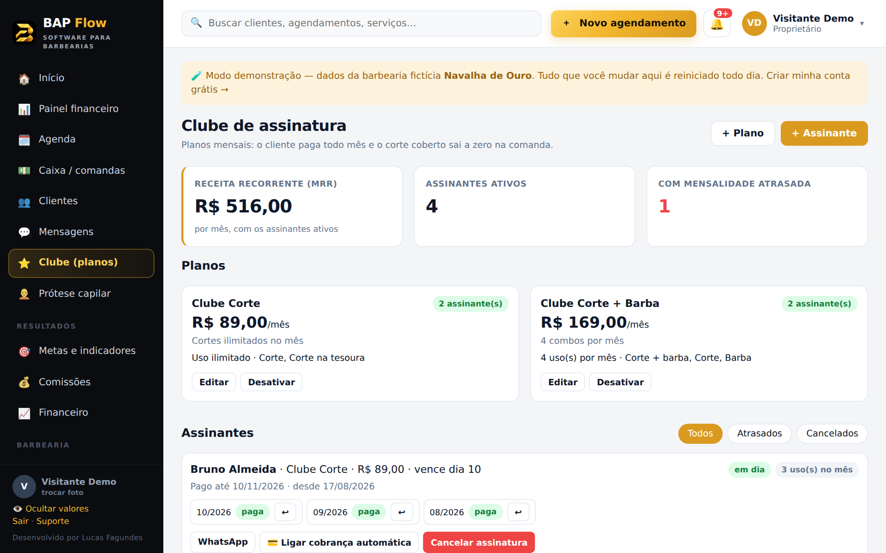
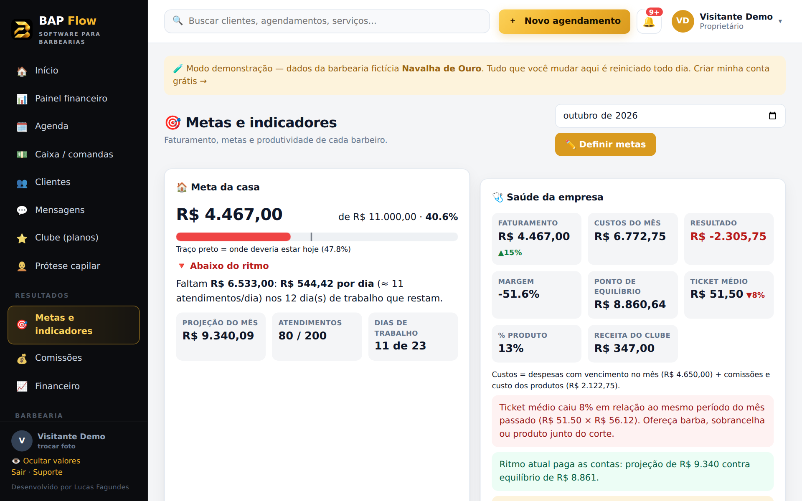

Do primeiro acesso até a barbearia rodando: o que cada tela faz, a ordem de configurar e as dúvidas mais comuns.
No navegador do celular ou do computador: bapflow.luqsys.com.br
O login é o que a barbearia recebeu (pode ser um nome ou um e-mail). Marque Manter-me conectado no seu aparelho.
Toque em Esqueci minha senha? na tela de entrada: abre o WhatsApp do suporte e a gente libera uma nova. Pra trocar a senha depois: Configurações → 🔒 Minha senha.
No menu, abra Instalar o app e siga o passo a passo do iPhone ou do Android. O BAP Flow fica com ícone na tela inicial, igual um aplicativo.

No primeiro acesso o sistema abre a tela de boas-vindas, com 6 passos. Os 4 primeiros deixam a barbearia pronta pra receber cliente:
Nome, WhatsApp, endereço, logo e cor. É o que o cliente vê no link de agendamento.
Cada barbeiro com comissão, dias e horário de trabalho e almoço.
Corte, barba, combo e sobrancelha já vêm cadastrados. É só ajustar preço e duração.
Copie e coloque na bio do Instagram e no status do WhatsApp. O cliente escolhe serviço, barbeiro e horário sozinho.
Um login pra cada barbeiro e pra recepção (Equipe).
Pra você e pra cada barbeiro.
Depois toque em Tudo certo, ir pro painel →. Dá pra rever esses passos quando quiser pela Ajuda.

O resumo do dia: agendamentos, confirmados, horários livres, encaixes e faturamento, mais a agenda de cada barbeiro e os horários disponíveis.


| Cartão fidelidade | A cada visita o cliente ganha um selo; ao completar a meta (ex.: 10), aparece Usar prêmio na comanda. |
| Cashback | Uma % do que ele paga vira crédito com validade, usado como forma de pagamento. |
| Crediário (fiado) | O dono libera um limite na ficha de cada cliente. Em branco o cliente não pode comprar no fiado; 0 bloqueia. |
| Mensagens | Listas prontas do dia: lembrete, sumidos, aniversário, quem faltou, prêmio chegando e mensalidade em aberto. É só tocar e enviar no WhatsApp. |
Planos mensais: o cliente paga todo mês e o corte coberto sai a zero na comanda, respeitando o limite de usos do mês.

| Perfis | Dono vê tudo. Barbeiro vê só a agenda, as comandas, a meta e a comissão dele. Recepção vê o balcão sem valores. Dá pra ajustar cada permissão. |
| Comissão | % por tipo: serviço avulso, extra, de assinante e produto. Serviço ou produto pode ter % própria. |
| Comissão por faixa | Ex.: a partir de R$ 12.500 no mês → 37%. A faixa vale sobre o faturamento inteiro do mês. |
| Metas | Meta do mês da casa e de cada barbeiro, projeção e quanto falta por dia. Botão pra mandar o andamento no WhatsApp do barbeiro. |
| Ponto | Pelo HoraPro, ligado em Configurações → Ponto. |
